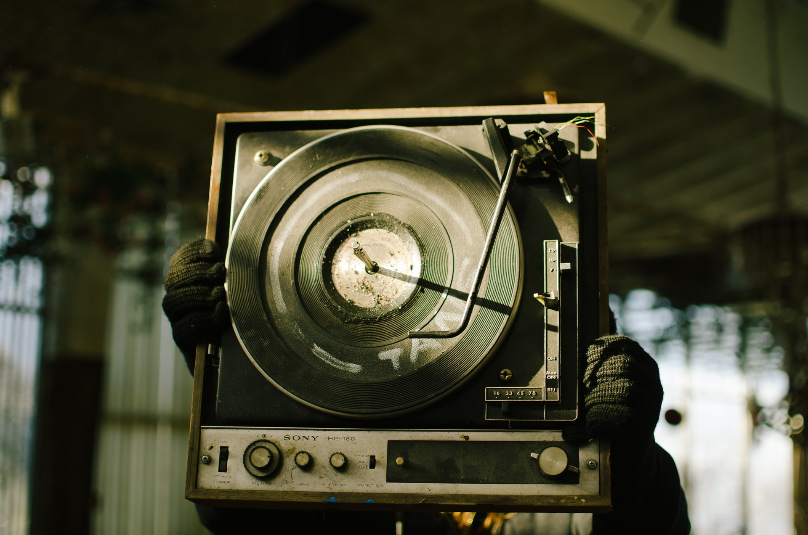
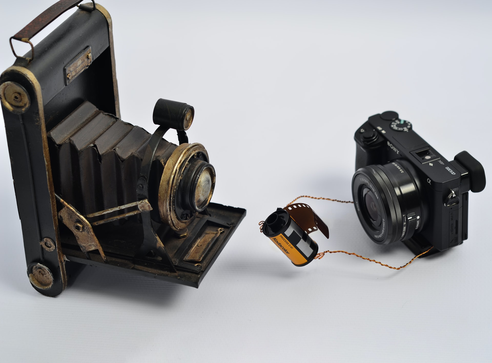
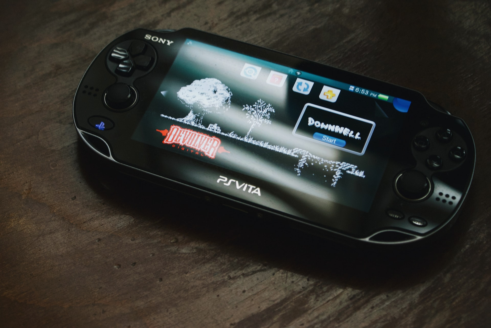
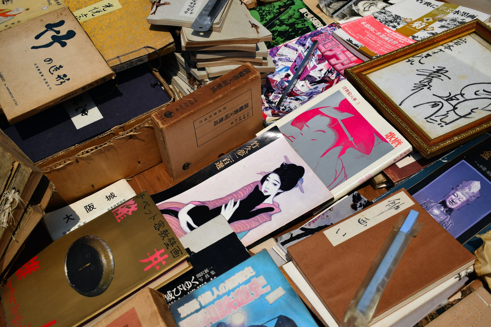
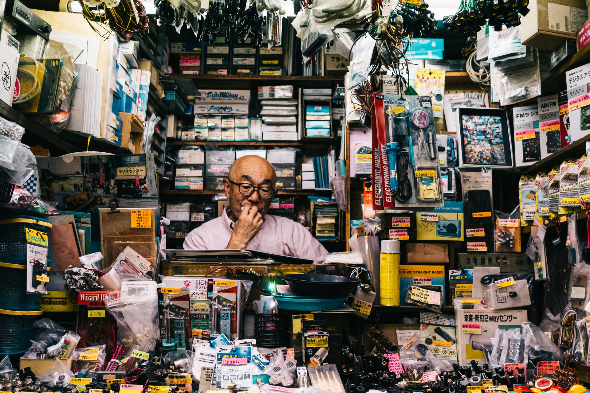
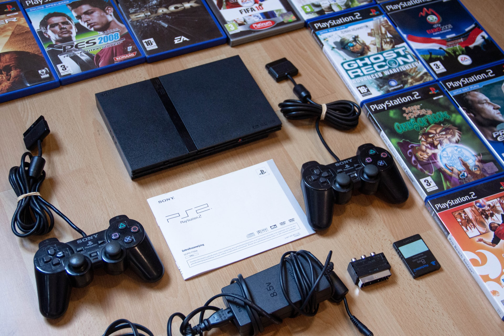

The Former Name Of Sony Corporation
Tokyo Tsushin Kogyo

Sony began in the wake of World War II. In 1946, Masaru Ibuka started an electronics shop in
Shirokiya, a department store building in the Nihonbashi area of Tokyo. The company started
with a capital of ¥190,000 and a total of eight employee. On 7 May 1946, Ibuka was joined by
Akio Morita to establish a company called Tokyo Tsushin Kogyo (東京通信工業, Tōkyō Tsūshin Kōgyō)
(Tokyo Telecommunications Engineering Corporation). The company built Japan's first tape recorder,
called the Type-G. In 1958, the company changed its name to "Sony".
The Name Sony

The name "Sony" was chosen for the brand as a mix of two words: one was the Latin word "sonus", which
is the root of sonic and sound, and the other was "sonny", a common slang term used in 1950s America to
call a young boy. In 1950s Japan, "sonny boys" was a loan word in Japanese, which connoted smart and
presentable young men, which Sony founders Akio Morita and Masaru Ibuka considered themselves to be.
At the time of the change, it was extremely unusual for a Japanese company to use Roman letters to spell
its name instead of writing it in kanji. The move was not without opposition: TTK's principal bank at the
time, Mitsui, had strong feelings about the name. They pushed for a name such as Sony Electronic Industries,
or Sony Teletech. Akio Morita was firm, however, as he did not want the company name tied to any particular
industry. Eventually, both Ibuka and Mitsui Bank's chairman gave their approval.
Globalization of Sony

According to Schiffer, Sony's TR-63 radio "cracked open the U.S. market and launched the new industry of
consumer microelectronics." By the mid-1950s, American teens had begun buying portable transistor radios in
huge numbers, helping to propel the fledgling industry from an estimated 100,000 units in 1955 to 5 million
units by the end of 1968.
Sony co-founder Akio Morita founded Sony Corporation of America in 1960. In the process, he was struck by the
mobility of employees between American companies, which was unheard of in Japan at that time. When he returned
to Japan, he encouraged experienced, middle-aged employees of other companies to reevaluate their careers and
consider joining Sony. The company filled many positions in this manner, and inspired other Japanese companies
to do the same. Moreover, Sony played a major role in the development of Japan as a powerful exporter during the
1960s, 1970s and 1980s. It also helped to significantly improve American perceptions of "made in Japan" products.
Known for its production quality, Sony was able to charge above-market prices for its consumer electronics and
resisted lowering prices.
Saving of the fallen Sony

In 1971, Masaru Ibuka handed the position of president over to his co-founder Akio Morita. Sony began a life insurance
company in 1979, one of its many peripheral businesses. Amid a global recession in the early 1980s, electronics sales
dropped and the company was forced to cut prices. Sony's profits fell sharply. "It's over for Sony", one analyst concluded.
"The company's best days are behind it." Around that time, Norio Ohga took up the role of president. He encouraged the
development of the Compact Disc in the 1970s and 1980s, and of the PlayStation in the early 1990s. Ohga went on to purchase
CBS Records in 1988 and Columbia Pictures in 1989, greatly expanding Sony's media presence. Ohga would succeed Morita as chief
executive officer in 1989.
Introducing of the Slogan: make.believe

In 2005, Howard Stringer replaced Nobuyuki Idei as chief executive officer, marking the first time that a foreigner had run
a major Japanese electronics firm. Stringer helped to reinvigorate the company's struggling media businesses, encouraging
blockbusters such as Spider-Man while cutting 9,000 jobs. He hoped to sell off peripheral business and focus the company
again on electronics. Furthermore, he aimed to increase cooperation between business units, which he described as
"silos" operating in isolation from one another. In a bid to provide a unified brand for its global operations, Sony
introduced a slogan known as "make.believe" in 2009.
Sony in late 2000s and beyond

In 2012, Kazuo Hirai was promoted to president and CEO, replacing Stringer. Shortly thereafter, Hirai outlined his company-wide
initiative, named "One Sony" to revive Sony from years of financial losses and bureaucratic management structure, which proved
difficult for former CEO Stringer to accomplish, partly due to differences in business culture and native languages between Stringer
and some of Sony's Japanese divisions and subsidiaries. Hirai outlined three major areas of focus for Sony's electronics business,
which include imaging technology, gaming and mobile technology, as well as a focus on reducing the major losses from the television
business.
In February 2014, Sony announced the sale of its Vaio PC division to a new corporation owned by investment fund Japan Industrial Partners
and spinning its TV division into its own corporation as to make it more nimble to turn the unit around from past losses totaling $7.8
billion over a decade. Later that month, they announced that they would be closing 20 stores. In April, the company announced that
they would be selling 9.5 million shares in Square Enix (roughly 8.2 percent of the game company's total shares) in a deal worth approximately
$48 million. In May 2014 the company announced it was forming two joint ventures with Shanghai Oriental Pearl Group to manufacture and
market Sony's PlayStation games consoles and associated software in China.
In 2015, Sony purchased Toshiba's image sensor business.
Merging and interaction of businesses within corporation
It was reported in December 2016 by multiple news outlets that Sony was considering restructuring its U.S. operations by merging its TV & film
business, Sony Pictures Entertainment, with its gaming business, Sony Interactive Entertainment. According to the reports, such a restructuring
would have placed Sony Pictures under Sony Interactive's CEO, Andrew House, though House wouldn't have taken over day-to-day operations of the
film studio. According to one report, Sony was set to make a final decision on the possibility of the merger of the TV, film, & gaming businesses
by the end of its fiscal year in March of the following year (2017).
In 2017, Sony sold its lithium-ion battery business to Murata Manufacturing. Followingly In 2019, Sony merged its Mobile, TV and Camera businesses.
On 1 April 2020, Sony Electronics Corporation was established as an intermediate holding company to own and oversee its electronics and IT solutions
businesses.
Sony in present

On 19 May 2020, the company announced that it will rename Sony Group Corporation as of 1 April 2021. Subsequently, Sony Electronics Corporation will
be renamed to Sony Corporation. On the same day the company announced that it will turn Sony Financial Holdings, of which Sony already owns 65.06% of
shares, to a wholly owned subsidiary through a takeover bid.